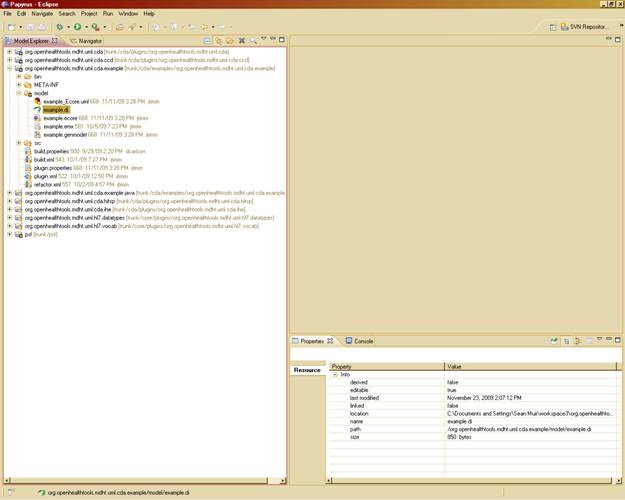
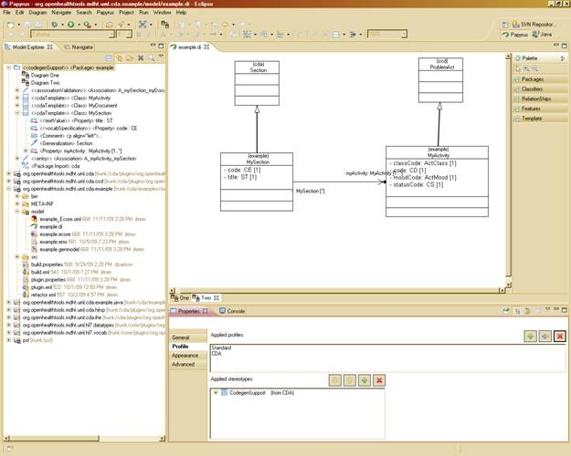
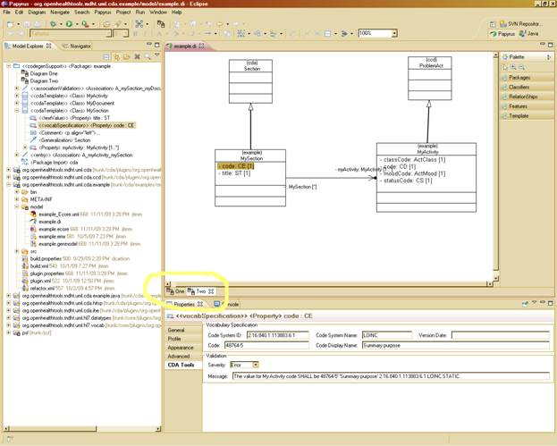
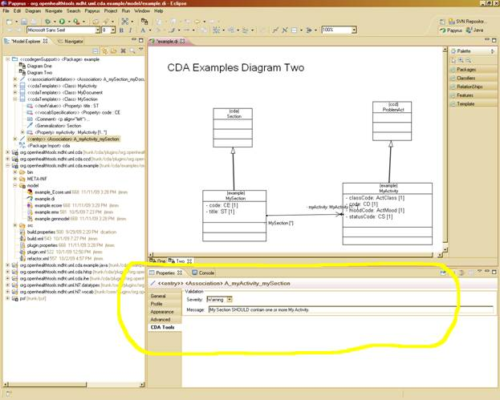
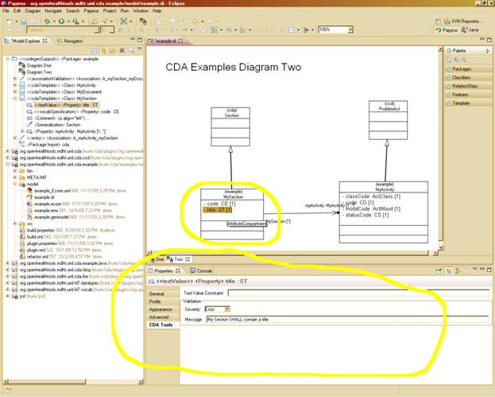

John T.E. Timm, IBM Research
David A. Carlson, Veterans Health Administration
See << insert link here >> for Papyrus Installation
The next step is to download the CDA models and runtime from the software repository at MDHT. Using the subversion client switch to the SVN Browsing Perspective and create a new repository location as show below:
Repository Location: http://mdht.projects.openhealthtools.org/svn/mdht
Where the username and password fields are the login used to sign in at the OHT website. Check out the following plug-ins into your workspace (as shown below):
core/plugins/org.openhealthtools.mdht.uml.hl7.datatypes
core/plugins/org.openhealthtools.mdht.uml.hl7.vocab
cda/plugins/org.openhealthtools.mdht.uml.cda
cda/plugins/org.openhealthtools.mdht.uml.cda.ccd
cda/plugins/org.openhealthtools.mdht.uml.cda.ihe
cda/plugins/org.openhealthtools.mdht.uml.cda.hitsp

The Modeling Health Tools (MDHT) and the Open Health Tools are dedicated to providing open source solutions with the Health Information Industry. The continuing support of the Eclipse Papyrus project is result of the ongoing effort to promote and use open source solutions.
Papyrus is an open source component of the Model Development Tools (MDT) subproject to provide an integrated, user-consumable environment for editing models based on UML. For a more complete description of the Papyrus Project please see MDT Papyrus Proposal.
The project is schedule to be officially release as part of the eclipse Helios release in June 2010, see project plan MDT Plan. As such, the current Papyrus application is still under development and is not been officially released. The MDHT project has been monitoring the Papyrus project progress and integrating at release intervals in order to test MDHT tools and provide any necessary feedback to Papyrus project.
The MDHT projects release of Papyrus is in response to demand for the CDA tooling in a 100% open source solution. As such, the MDHT project has decided to release our internal Papyrus integration build to allow early adopters and brave souls the opportunity to use the MDHT tools within the Papyrus UML environment. The MDHT Papyrus is provided as is and while we will respond to all incidents and issues resulting from using MDHT CDA tools within the environment we can not provide continual updates to the MDHT Papyrus Integration build in response to any Papyrus UML application issues or updates. We will though provide as part of our development activities release updates as necessary to the MDHT tools in response to issue within the MDHT tool set.
The purpose of this section is to describe the example project within the Papyrus application. We will illustrated some basic Papyrus features but please refer to the latest version of the Papyrus Users Guide for additional information Papyrus User Guide. The example project that is available for download from the MDHT using Subversion, see the Papyrus Installation Guide for more information (<<LINK TO INSTALLATION>>)
After starting eclipse, switch to the Papyrus perspective using the Window->Open Perspecitve->Other option and select Papyrus from the list of perspectives. The next step is to open the project using the Model view and navigate to the Example.di file in the model subdirectory. Using the right key on the mouse pad select the Open With->Papyrus Core Editor (Should be the top option). If properly opened, a new folder will appear at the top of the Model view name example. A class diagram should appear in the main frame of the eclipse application. There are two diagrams that have been created as part of the model, one and two. You can switch between the two by selecting them in the main view table highlighted in the screen shot.




The example project contains a simple template model that further constrains the CCD (Continuity of Care Document) model. The model contains three templates: MyDocument, MySection, and MyActivity. The following class diagram captures the relationships between the MyDocument and MySection classes and classes in CCD and the base CDA model. Additionally, it displays the relationship between MyDocument and MySection. The MyDocument and MySection templates both contain the <<cdaTemplate>> stereotype. This indicates, in the diagram, that they further constraint the ClinicalDocument and Section classes, respectively, from CDA. The <<cdaTemplate>> stereotype also holds the value of the template identifier in standard HL7 OID format.

The diagram below captures the relationships between MySection and MyActivity.

These diagrams should give you a feel for the various classes, properties, and relationships in a CDA template model. You will notice that the attributes defined in MyDocument, MySection, and MyActivity mirror those defined in their parent classes from CCD and CDA. These attributes are used to further constrain the attribute definitions from the parent. For example, if a code is optional in the parent, defining an attribute with the same name and type as the parent but specifying a minimum cardinality of 1 makes the attribute required. This type of property redefinition is used during the model-to-model transformation step to generate OCL constraints that are attached to the template model classes.
Relationships between classes that specialize cda::ClinicalDocument and classes that specialize cda::Section, use directed associations to indicate a relationships between two templates in an implementation guide. This type of relationship models conformance rules such as: MyDocument SHALL contain exactly one MySection and MySection SHOULD contain one or more MyActivity Additional information about the conformance rule can be specified in property values for the <<associationValidation>>, <<entry>>, and <<entryRelationship>> stereotypes. The CDA Tools property tab is a convenient mechanism for entering such data:

The tab is context-sensitive and will only display the data fields available for the element selected in the model diagram or tree view.
Validation severity (a property of the <<associationValidation>> stereotype) is used to differentiate whether the relationship is strictly required for an instance to be considered valid. Validation severity may take on one of three possible values ERROR (strictly required, SHALL), WARNING (recommended/best practice, SHOULD), and INFO (optional, MAY).
UML properties defined in the template model are used to place further constraints on those defined in the parent template model and base CDA model. For example, MySection.code defines a fixed value for the section code using stereotype values from the <<vocabSpecification>> stereotype. The CDA Tools property tab for MySection.code is shown below. This tab can be used to specify the Code, Code System, Code System Version, etc. for a particular coded attribute.

In addition to constraints on coded attributes, structural attributes such as classCode, typeCode, and moodCode can be defined with a fixed or default value in the template model. MyActivity.classCode and MyActivity.moodCode are used to illustrate this type of constraint. Fixed or default value constraints can also be applied to attributes that use text-based datatypes such as ED or ST as illustrated by the MySection.title attribute.
Summary of required steps:
Now that we have explored the two diagrams associated with the example template model, we will begin to look at how this model can be used to generate a Java-based runtime implementation for producing, consuming, and validating instances. The first step in the process is to transform the template model into an implementation model. The model-to-model transformation is invoked from an Ant build task. In order to run the transformation, right-click on the build.xml file in the project root directory and select Run as > Ant Build

Make sure that Run in the same JRE as the workspace is selected from the JRE tab. Then click the Apply button at the bottom of the dialog and then Run. The console output should look something like this:

The original template model is converted into an implementation model with _Ecore.uml appended to the name. In this example, the implementation model is named example_Ecore.uml. Constraints defined as associations and property redefinitions in conjunction with metadata specified in stereotype property values are transformed into OCL constraints and annotations that are used for validation and instance population at runtime. For example, the directed association relationship that was defined between MyDocument and MySection gets transformed into the following OCL constraint:
self.getSection()->one(section : cda::Section | section.oclIsKindOf(example::MySection))
The getSection() method is an OCL query method that is defined in the base CDA model to return all of the sections under a clinical document by traversing the component.structuredBody.component association between the ClinicalDocument and Section classes. The rest of the constraint specifies that exactly one section is of type MySection (or one of its subclasses).
The second step in creating a Java runtime implementation is to create the EMF model that will be used to generate Java source code. The EMF model is provided for you in this example. The EMF model is composed of two parts: the Ecore model and the generator model. The Ecore model is very similar to the UML class model that was created during the template modeling step. The generator model contains information about how to transform the Ecore model into Java source code. As you can see in the diagram below, the Ecore model is named example.ecore and the generator model is named example.genmodel.

In order for changes to the template model to be reflected in the EMF model after the model-to-model transformation, the EMF generator model must be reloaded. In order to reload the generator model, right click on example.genmodel and select Reload from the context menu. After the model import dialog pops up, click on the Next button twice and then click on the Finish button. The new updated generator model will display in editor view as shown:

The third step is to right click on the root element named Example and select Generate Model Code. This will generate all of the required Java packages and source files under the src folder of the project.

You can explore the generated code by browsing packages such as org.openhealthtools.mdht.uml.cda.example under the src folder.

You will notice a Factory class is generated. This class is used to create instances of the classes defined in your template model (e.g. MyActivity) using the following syntax:
MyActivity activity = ExampleFactory.eINSTANCE.createMyActivity().init();
Notice the init() method is called after the createMyActivity() method. This is used to populate the instance with any fixed or default values that were specified in the template model. This reduces the number of method calls used to construct a valid instance.
We have provided a working test driver for this example in the org.openhealthtools.mdht.uml.cda.example.tests package to demonstrate the construction of a basic instance using classes from the template model. Additionally, the driver demonstrates how to use the CDA utility class to serialize and validate the document.
There is an Ant refactor script that can be used to convert the example project into a project for your specific needs. This can be accomplished in three steps:
1. Download and disconnect the example project from the MDHT SVN:
a. Check out cda/example/org.openhealthtools.mdht.uml.cda.example
b. Right-click on Project and select Team > Disconnect from SVN and select Also delete SVN meta-information from file system

NOTE: It is recommended that you check out a clean copy of the example to use in this step.
2. Rename the project:
a. Right-click on Project and select Refactor > Rename (example: org.openhealthtools.mdht.uml.cda.phmr)

3. Edit and run the refactor.xml script:
a. Open the refactor.xml script in the Ant or text editor
b. Change the property values for the following properties:
i. basePackage (e.g. org.openhealthtools.mdht.uml.cda)
ii. packageName (e.g. phmr)
iii. prefix (PHMR)
iv. nsURI (e.g. http://www.openhealthtools.org/mdht/uml/cda/phmr)
c. Run the refactor.xml script as an Ant build using the same instructions found in the previous section. Make sure to run in the same JRE as the workpace.